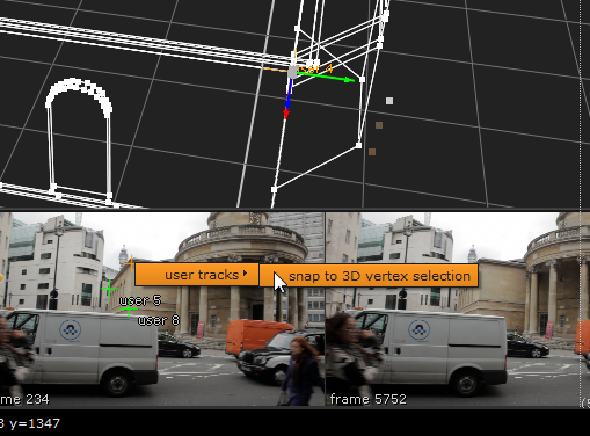

If you create a User Track, you can assign it as a known 3D survey point. This tells CameraTracker which points in your 2D footage go with their counterparts on your 3D model, allowing it to solve the camera to match the known 3D points and achieve the best results.
NOTE: 3D survey points have replaced the ProjectionSolver workflow, but you can still add ProjectionSolver nodes by pressing X in the Node Graph and entering ProjectionSolver as a Tcl command.
TIP: You can create a 3D model for your footage using ModelBuilder or an external application.
To create 3D survey points in your scene:
| 1. | To define the full rotation, translation, and scale between the scene and your survey points, create and track at least three User Tracks. If you track more than three, you'll get the best fit result. See Working with User Tracks for more information. |
| 2. | Switch the Viewer to 3D mode, either by pressing Tab in the Viewer or using the View selection dropdown. |
| 3. | Set the Thumbnail control above the Viewer to All to display all reference frame thumbnails as an overlay in the Viewer. |
| 4. | Use the selection mode button above the Viewer to swap to Vertex selection mode. |
| 5. | Select a vertex on the 3D model and the User Track you want to be a survey point in the thumbnail gallery. |
| 6. | Right-click on the User Track and select user tracks > snap to 3D vertex selection. |

| 7. | In the CameraTracker properties panel, click the UserTracks tab to display a list of tracks. |
The user track table displays the pixel error when matching the 3D vertex to the User Track. You can use this to review how well the camera solve fits the 3D survey points.
If the solver could not match a point, there will be a high error value. If this happens, try looking at the 2D feature positions to check they correspond to the same point and also double check the 3D vertex on the model.
| 8. | Repeat the process for the required User Tracks in the scene, and then enable the s checkbox for each track in the User Tracks table. |
The s designates the points as known 3D survey positions during the solve, allowing CameraTracker to create a camera positioned correctly for the geometry.
TIP: If you have multiple footage sources of the same scene or content available, you can also use survey points to solve each of your sources and then register them all in the same world. See Combining Solves.
|
|